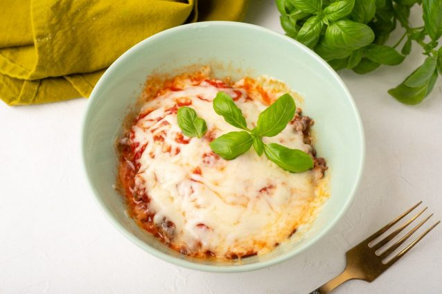

Pizza in a Bowl

If you love pizza but are looking to cut down on your carb intake, this easy pizza bowl recipe is about to blow your mind. With loads of hamburger meat, pepperoni, cheese, and tomato sauce, pizza in a bowl tastes exactly like a classic pie from your local slicehouse, but without the carbs and extra calories.
Pizza bowls are fast and easy to make, which means they're perfect for busy weeknights and they're so tasty, you can bet the whole family will love them. The best part is that they can be customized to suit your tastes. Add sausage, mushrooms, olives, zucchini – anything goes!
Ingredients
- COOKED HAMBURGER 1/2 cup
- MOZZARELLA, SHREDDED 1/2 cup
- SUGAR-FREE PIZZA SAUCE 1/4 to 1/2 cup
- PEPPERONI 8 to 10 slices
- OREGANO AND GARLIC SALT TO TASTE
Steps
- Place ¼ cup of the hamburger half in a microwave-safe bowl.
- Add the pepperoni.
- Pour half of the pizza sauce.
- Add half of the cheese. Season with oregano and garlic salt.
- Layer the remaining hamburger, pepperoni, pizza sauce, and cheese in the bowl. Season with more oregano and garlic salt.
- Place in the microwave and cook for 2 minutes on high or until the cheese is melted and bubbly.
- Serve and enjoy.